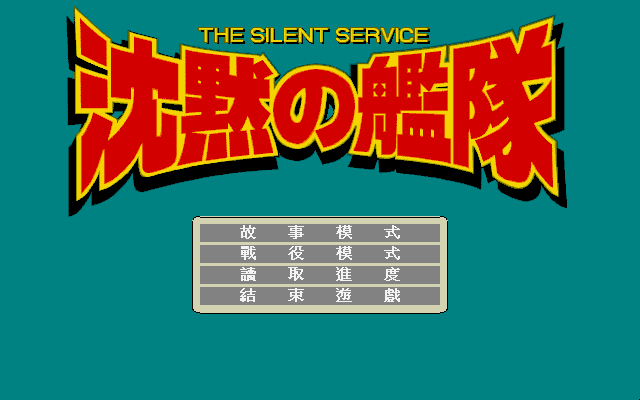
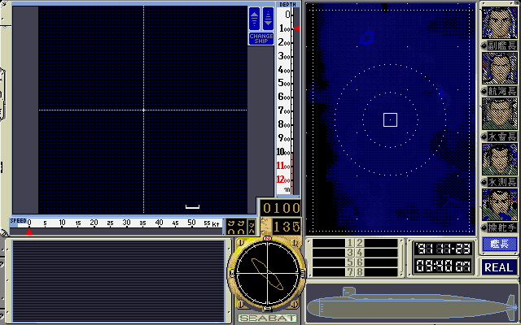

名稱：沉默的艦隊1 (The Silent Service，中文版) 簡介：G.A.M. 1995年出品的潛艦海戰模擬與即時戰術遊戲，由華義中文化並代理發行 [待補]。

保護：光碟，破解碼（放入光碟才有背景音樂）： OPEN.EXE 42 00 36 08 25 FF 00 3D 00 00 00 74 03 -- -- -- -- -- -- -- -- -- -- -- 90 90 或 OPEN.EXE B8 00 11 CD 2F 3C FF 74 07 C6 46 FC 00 E9 0E 00 B8 00 15 CD 2F B4 19 CD 21 98 40 8B C8 B8 FF 15 BB 01 00 EB 05 90 90 90 90 90 42 00 36 08 25 FF 00 3D 00 00 00 74 03 -- -- -- -- -- -- -- -- -- -- -- 90 90 SILENT.EXE B8 00 11 CD 2F 3C FF 74 07 C6 46 FC 00 E9 0E 00 B8 00 15 CD 2F B4 19 CD 21 98 40 8B C8 B8 FF 15 BB 01 00 EB 05 90 90 90 90 90 或 OPEN.EXE 74 07 C6 46 FC 00 E9 0E 00 B8 00 15 CD 2F 41 88 0E BA 0E EB -- -- -- -- -- -- -- -- B4 19 CD 21 FE C0 A2 BA 0E 90 25 FF 00 3D 00 00 74 03 E9 20 00 B8 03 00 CD 10 (共2個) -- -- -- -- -- -- 90 90 -- -- -- -- -- -- -- -- SILENT.EXE 74 07 C6 46 FC 00 E9 0E 00 B8 00 15 CD 2F 41 88 0E 0A D7 EB -- -- -- -- -- -- -- -- B4 19 CD 21 FE C0 A2 0A D7 90